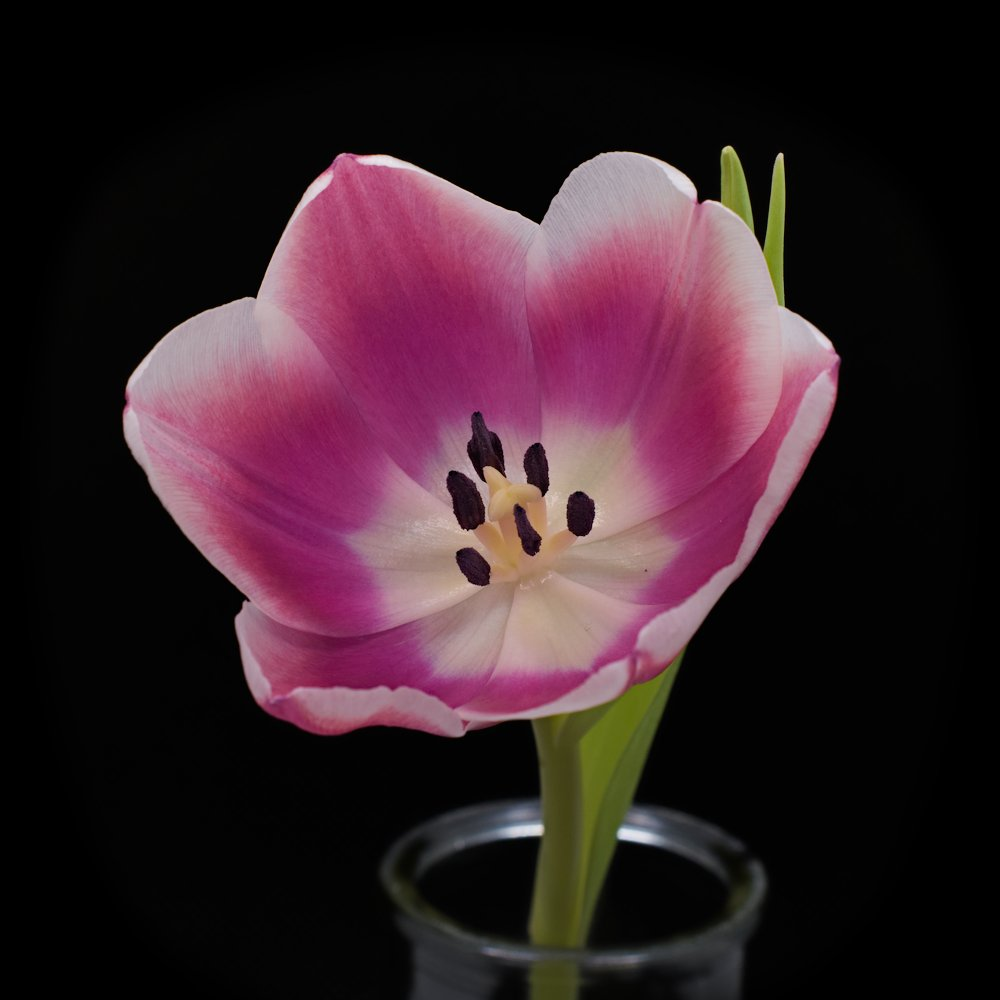
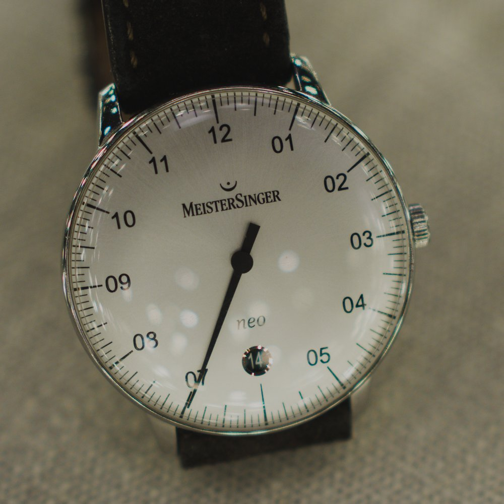
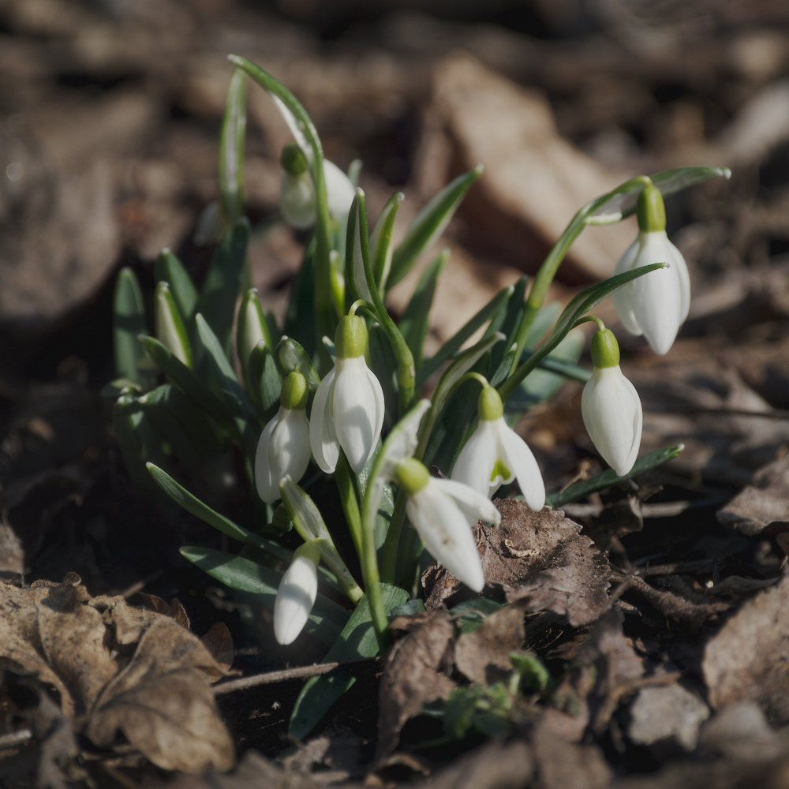
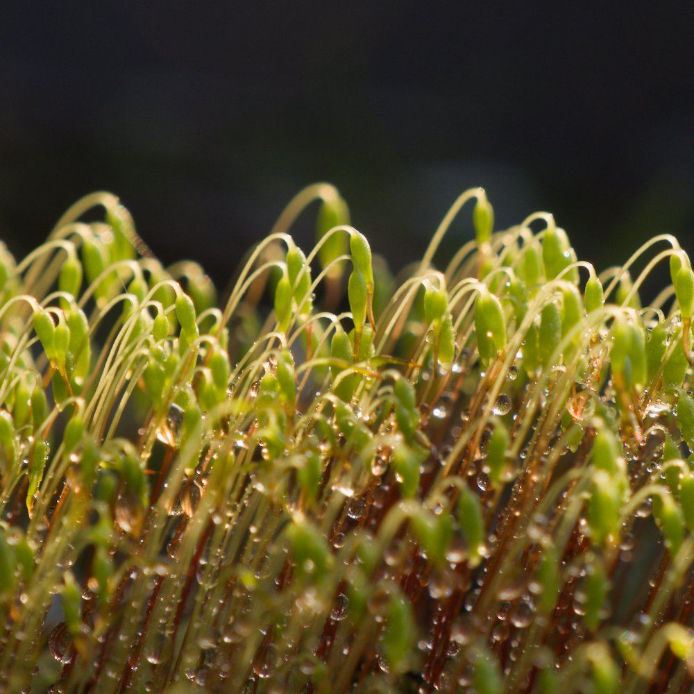

F/6.3 | 1/500s | ISO 800 | 218 mm
Fuji X-T5 + Tamron 18-300mm F3.5-6.3

1/30s | ISO 320
Fuji X-T5 + TTArtisan 35mm F0.95 (manual)

1/500s | ISO 400
Fuji X-T5 + TTArtisan 35mm F0.95 (manual)

F/5 | 1/2000s | ISO 640 | 184.6 mm
Fuji X-T5 + Fuji XF70-300mm F4-5.6

F/10 | 1/1000s | ISO 4000 | 600 mm
Fuji X-T5 + Fuji XF150-600m F5.6-8

F/5.6 | 1/1250s | ISO 5000 | 300 mm
Fuji X-T5 + Fuji XF70-300mm F4-5.6

F/9 | 1/125s | ISO 400 | 55 mm
Fuji X-T5 + Fuji XF18-55mm F2.8-4 + macro ring + magnifying lense